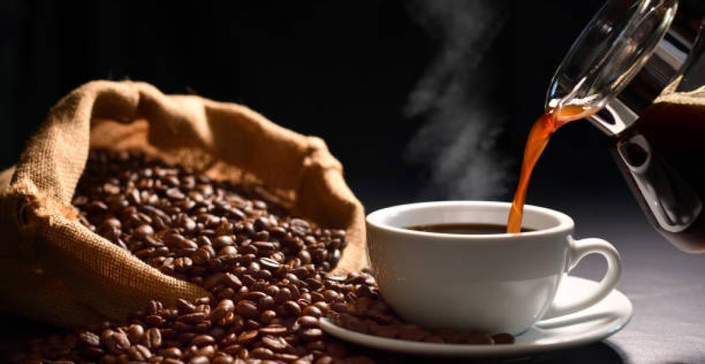
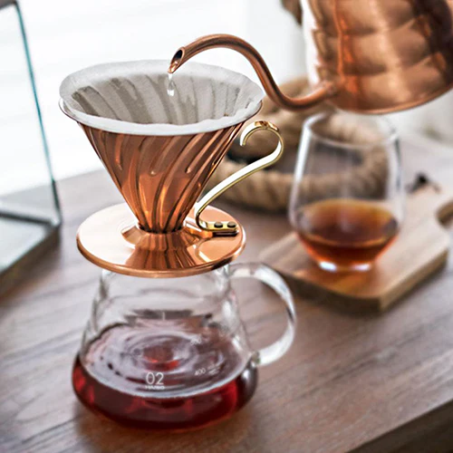

Las principales preparaciones de CAFE
Aquí ponemos las diferentes preparaciones de café que hay.

Cafe Expreso
bebida de café concentrada, intensa y de sabor fuerte,
creada a partir de agua caliente forzada a través de café molido finamente a alta presión,
Perfecto para momentos de sueño.

Cafe En Prensa Francesa
bebida que se obtiene mediante la inmersión del café molido en agua caliente,
seguido de un proceso de filtrado con un émbolo.Este método permite extraer los aceites y
sabores del café de forma manual, resultando en una taza con un cuerpo intenso y un sabor pronunciado.

Cafe En V60
diseño cónico en forma de "V" con un ángulo de 60 grados. Este diseño,
junto con las estrías en espiral en el interior,
permite una extracción uniforme y controlada del café, resaltando sus sabores y aromas.

Moca italiana
Es un método para preparar café que funciona haciendo pasar agua caliente presurizada por vapor a través de café molido.
Es famosa por producir un café intenso y concentrado, similar al espresso.